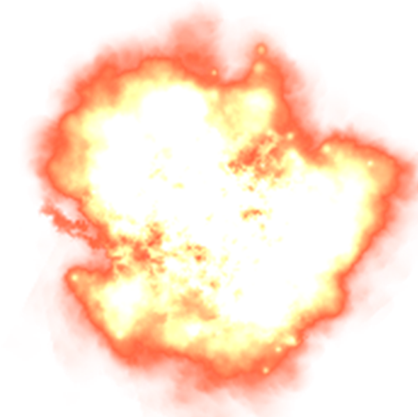

26.04.1986
Кратко о самой Чернобыльской Атомной электростанции
Чернобыльская АЭС была первой атомной электростанцией на территории Украинской ССР, ее местонахождение - к северу от Киева, в 11 км от границы с Белоруссией, в долине реки Припять. Одноименный город Припять располагался в 3-х км к западу от зоны АЭС, а в 18 км к востоку от станции - районный центр город Чернобыль. Оба эти города в настоящее время являются покинутыми (в народе их называют «города-призраки»). В эксплуатацию первый блок атомной станции был введен 27 сентября 1977 года.
Хронология событий
25 апреля 1986г.
Сотрудники Чернобыльской АЭС готовились к остановке четвертого энергоблока на плановый ремонт и проведению исследований по снятию дополнительной энергии во время работы основного атомного реактора. Из-за диспетчерских ограничений остановка ядерного реактора несколько раз откладывалась, что привело к трудностям с управлением мощностью реактора.
13:00-13:05
Начала снижаться мощность реактора (с 3200 мегаватт до 1600), была остановлена турбина №7, а питание электросистем переведено на турбину №8.
14:00
Была заблокирована система аварийной остановки реактора, а диспетчер дал распоряжение задержать остановку блока №4. Сам реактор работал на половине мощности (1600 мегаватт).
23:10
Было разрешено начать снижение мощности реактора (до 500 мегаватт).

26 апреля 1986г.
0:38
Мощность реактора упала до 30 мегаватт, началось ксеноновое «отравление» реактора (реактор из-за накопления изотопа ксенона приобрел отрицательную реактивность и не мог выйти на высокую мощность). Вместо того, чтобы глушить реактор (как предписывала инструкция), сотрудник АЭС вывел из активной зоны поглощающие стержни.
1:00
Мощность реактора удалось поднять только до 200 мегаватт из-за нарастающего ксенонового отравления.
1:03-1:07
К шести главным циркулярным насосам подключились седьмой и восьмой насосы, но работа такого количества насосов спровоцировала сбой в системе из-за недостатка воды.
1:19
Из-за понижения уровня воды, оператор станции увеличил подачу конденсата (питательной воды). Кроме того, в нарушение инструкции блокировались системы остановки реактора по сигналам недостаточного уровня воды и давлению пара. Из активной зоны вывели последние стержни ручного управления, которые позволяли вручную управлять процессами, происходящими в реакторе.

01:22-01:23
Уровень воды стабилизировался. Сотрудники станции получили распечатку параметров реактора, на которой было видно, что запас реактивности опасно мал (что, опять же, по инструкции означало, что реактор нужно глушить). Персонал АЭС решил, что можно продолжать работу с реактором и проводить исследования. При этом тепловая мощность начала увеличиваться.
01:23
Было решено нажать кнопку аварийного глушения реактора А3-5. По сигналу этой кнопки в активную зону должны были вводиться стержни аварийной защиты, однако до конца опустить их не удалось – давление пара в реакторе задержало их на высоте 2-х метров (высота реактора -7 метров). Тепловая мощность продолжила расти (до 530 мегаватт), начался саморазгон реактора, в результате в 01:23:44 произошел скачок мощности в 100 раз.Многократно возросло давление в активной зоне блока №4, оно вытеснило воду обратно в трубопроводы. Произошел взрыв. Управлять реактором стало невозможно. По некоторым данным, в 01:23:46 произошел ещё один взрыв. Стены и перекрытия машинного зала были разрушены, возникли очаги пожара. Сотрудники начали покидать рабочие места.

 Заброшенный город Припять
Заброшенный город Припять
01:24
Частично разрушилась активная зона реактора, осколки деления вышли за пределы зоны.
02:10-02:30
Были подавлены очаги пожара на крыше машинного зала и реакторного отделения станции.
К 5 часам пожар был полностью ликвидирован.
В 8 часов вечера в энергоблоке №4 снова возник пожар, уже большей интенсивности, к тушению были привлечены вертолеты.
27 апреля 1986 года
104 пострадавших при взрыве АЭС были отправлены в московскую больницу (непосредственно при катастрофе погиб только 1 человек). В 14 часов дня началась эвакуация людей, в этот день было вывезено более 45 тысяч местных жителей. Всего до конца 1986 года было эвакуировано порядка 116 тысяч жителей из 188 населенных пунктов.
Май 1986 года
Правительство решило законсервировать 4-й блок ЧАЭС во избежание выхода в окружающую среду радионуклидов и дальнейшего заражения проникающей радиацией в зоне станции.
В ноябре 1986 года
Над 4-м энергоблоком был построен т.н. «саркофаг» - изоляционное бетонное укрытие для предотвращения распространения радиации.
За первые три года после аварии на территории аварийной АЭС побывало более 250 тысяч работников, которым было поручено минимизировать последствия катастрофы. В последующие годы к работам по ликвидации последствий аварии привлекалось порядка 600 000 человек.
В 1993 году на ЧАЭС был остановлен второй энергоблок, в 1996 году – первый энергоблок, в 2000 году – последний работающий энергоблок – третий.
15 декабря 2000 года в 13:17
Чернобыльская электростанция была остановлена.
Интересный факт!
Верховная Рада Украины постановила полностью ликвидировать ЧАЭС к 2065 году. Кроме того, в ближайшие годы планируется построить хранилище отработанного ядерного топлива, чтобы превратить станцию в безопасный объект.